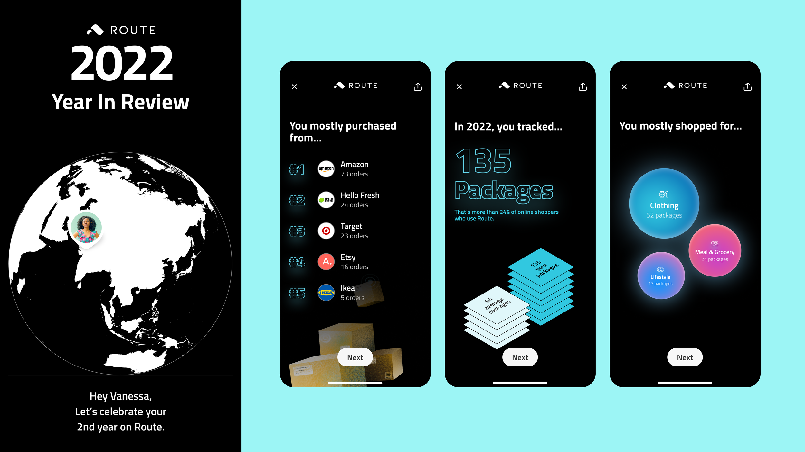
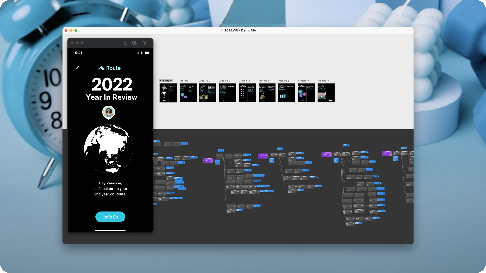
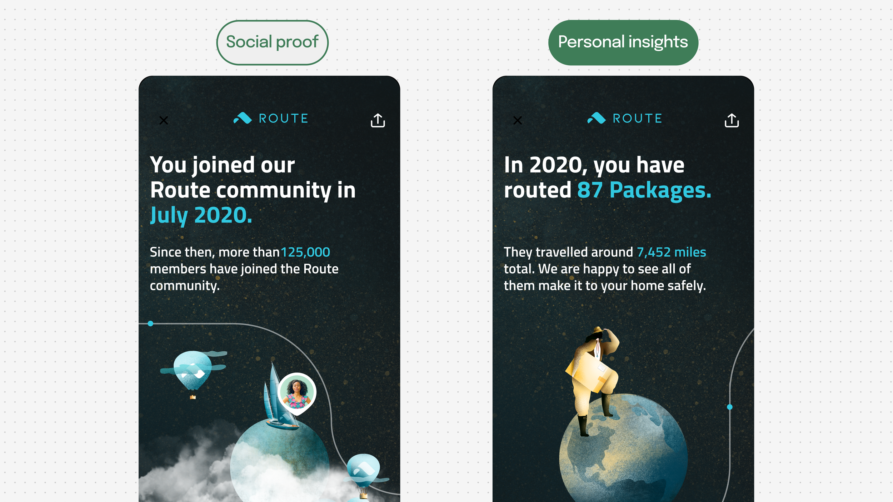
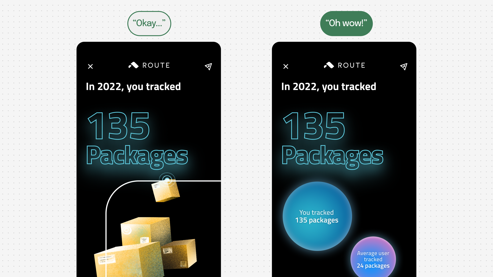
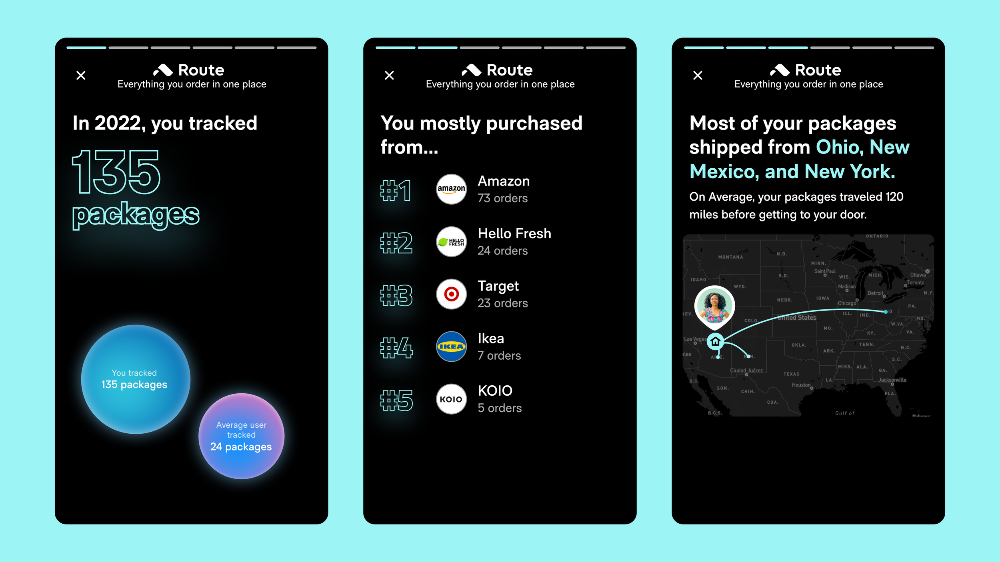
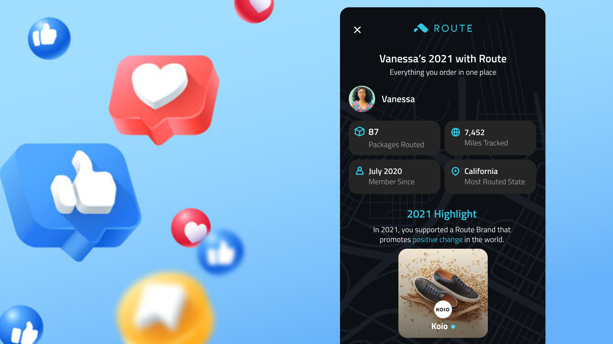

Route: Year
in Review
A Spotify Wrapped–inspired experience that turned passive package tracking data into 50k+ social shares. Led end to end — concept, animation, engineering collaboration, A/B testing, and a second edition the following year.
01 · Context
The value existed. It just wasn't visible.
Route users tracked packages reliably — but most only opened the app during active tracking. The data users generated over a year (brands supported, shopping habits, package counts) was invisible to them. Merchant partners needed exposure. Social sharing was minimal.
The question from leadership: how might we turn invisible behavioral data into a celebratory, shareable moment? The answer was Spotify Wrapped, applied to post-purchase data.

02 · My Tasks
Concept to launch — prototyping, animation, exec review
I aligned Growth, Shop, Merchant Partner, Data, CX, and Lifecycle Marketing teams around a shared opportunity — co-authoring the PRD with the PM and leading design from concept through ship.
Every Tuesday for 3 weeks, I brought a working prototype to exec review — built in Origami with gesture control, haptics, and timing tuned to simulate native behavior, loaded onto a real phone. Motion design made the product. I broke every screen into what could be a Lottie file, what could be native transitions, and what needed dynamic rendering — then shipped alongside engineers in 4 weeks.


2021 and 2022 design explorations

Origami prototyping — gesture control, haptics, native-feel timing
03 · Year-over-Year Iteration
A/B testing found the moment worth sharing
Post-launch retro on the 2021 edition revealed that the majority of share events happened on the final summary screen. This reframed the 2022 design problem: get more users through the experience to reach that screen.
A/B tests showed users were more likely to complete the flow when personal insights came first — and that showing "your number compared to others" drove stronger engagement than presenting the number alone. Data visualization beat imagery. I redesigned the 2022 flow around these findings.


A/B test insights driving the 2022 redesign
04 · Impact
50k+ shares and a feature that came back the next year
Year in Review drove 50k+ unique shares and a 75% increase in in-app social sharing year-over-year. The experience turned Route from "just a tracking app" into something customers wanted to talk about.
The feature shipped twice — 2021 and 2022 — with measurable YoY improvement driven directly by the A/B testing and design iteration between editions.


The most-shared screen — the one that drove the 2022 redesign strategy